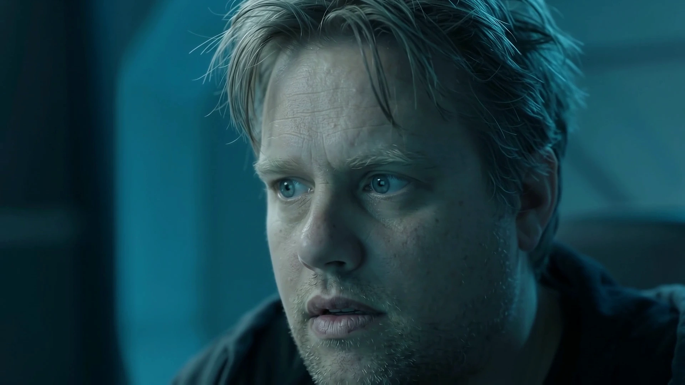

Text conversations
A documented twin-chat research route can answer bounded prompts with owner-authorized context.
Home / Kira World / Synthetic Robert
Owner-authorized digital twin / bounded status
Synthetic Robert explores a separately identified digital person based on owner-approved records. The existing route supports bounded text and an approved self-voice path; it is not a full replica of the human's experiences.

Evidence by stage
These are separate engineering stages, not a single overall completion score.
A documented twin-chat research route can answer bounded prompts with owner-authorized context.
Stored facts should respect audience limits, uncertainties and corrections.
A 3D digital human, comprehensive life memories and autonomous presence are not verified.
Why this area matters
The design separates human-origin references from the synthetic individual's later memories, identity and decisions.
A source review is not a verified working feature; references and illustrations remain labeled.

Read the original research
Detailed results remain available on their original Kira Labs pages. Private source media, user histories and uncensored anatomical images are not published here.